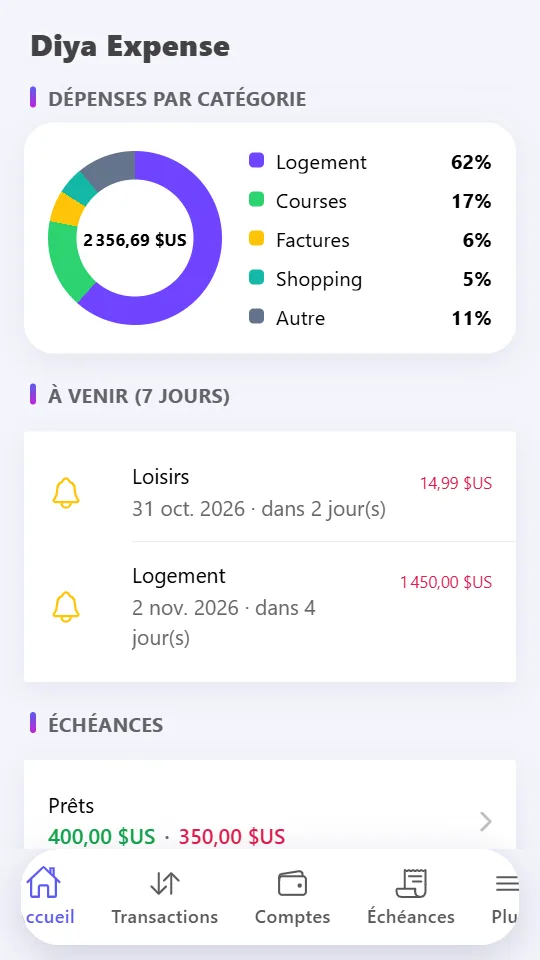
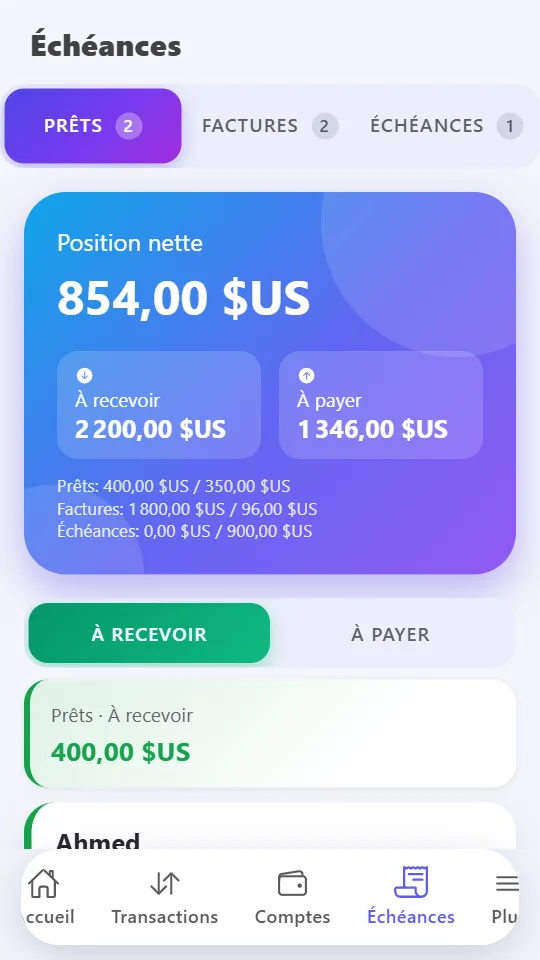
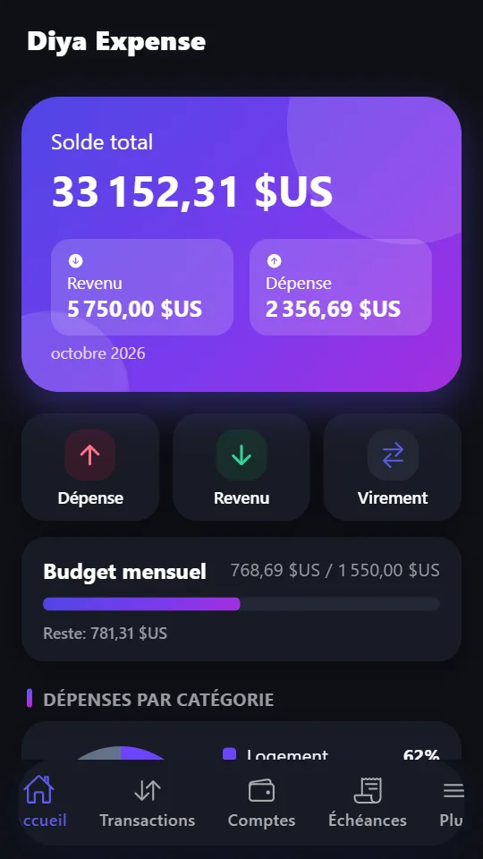

Suivez tout
Dépenses, revenus et virements en quelques secondes. Comptes illimités, vos propres catégories, #étiquettes et photos de reçus.
Suivi de budget et de dépenses privé. Fonctionne hors ligne. Sans compte, sans pub.
Disponible sur Google PlaySans compte · Sans pub · Vos données restent sur votre téléphone
Diya Expense est un gestionnaire d'argent privé qui fonctionne entièrement hors ligne. Enregistrez vos dépenses en quelques secondes, suivez votre budget et vos objectifs d'épargne, gardez la trace de ce que vous devez et de ce qu'on vous doit, et voyez clairement où va votre argent.
Dépenses, revenus et virements en quelques secondes. Comptes illimités, vos propres catégories, #étiquettes et photos de reçus.
Définissez un budget mensuel par catégorie et suivez-le sur l'accueil. Créez des objectifs avec un montant cible et ajoutez des fonds au fil du temps.
Un anneau des dépenses par catégorie, l'évolution revenus/dépenses sur 6 mois et une prévision de fin de mois.
Suivez l'argent prêté ou emprunté, les factures émises ou reçues, et répartissez vos achats en échéances planifiées.
Loyer, factures, abonnements et salaire en pilote automatique, avec des notifications locales avant l'échéance.
Tout reste sur votre appareil. Verrouillage par PIN et empreinte ou visage. Aucun suivi, aucune connexion requise.
Sauvegardez dans un fichier et restaurez sur un nouveau téléphone, ou exportez toutes les transactions en CSV pour Excel et Google Sheets.
Anglais, arabe, ourdou, français et espagnol avec prise en charge complète de la droite à gauche, plus thèmes clair et sombre.
Non. Il n'y a pas d'inscription et l'application fonctionne entièrement hors ligne.
Uniquement sur votre téléphone. L'application n'envoie vos données à aucun serveur. Consultez la politique de confidentialité pour les détails.
Sauvegardez vos données dans un fichier depuis les Paramètres, copiez-le sur votre nouveau téléphone et importez-le. Vous pouvez aussi exporter les transactions en CSV.
Anglais, arabe, ourdou, français et espagnol, avec des interfaces de droite à gauche et des thèmes clair et sombre.
Oui. Suivez l'argent prêté ou emprunté, les factures et les échéances, avec paiements partiels et position nette globale.



Aucun compte requis. Vos données restent sur votre téléphone.
Disponible sur Google PlayTéléchargez Diya Expense et prenez le contrôle de votre argent dès aujourd'hui.